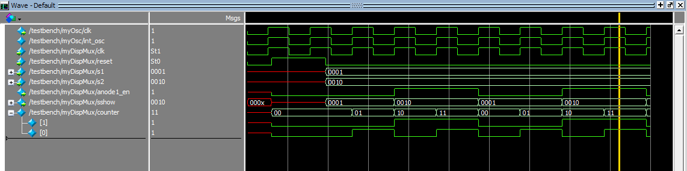
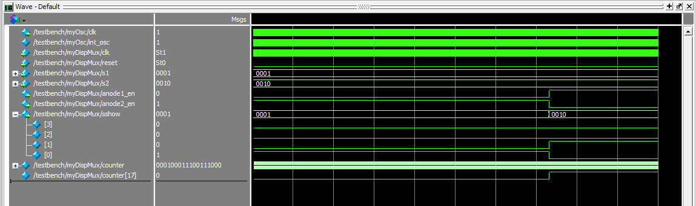

Lab 2: Multiplexed Seven Segment Displays
Summary
The main goal of this assignement was learn how to multiplex hardware in order to use fewer FPGA input/output pins to drive two seven segment displays simaultaneously. I also learned how to write a testbench in SystemVerilog and how to design modularly.
Design and Testing Methodology
The FPGA pins can only handle \(8 \mu A\) of current (source: Table 4.17, row 3V3 in the FPGA datasheet). The resistors were chosen to keep them under this limit with a simple Ohm’s Law calculation.
For LEDS: \(3.3V/8 mA = 413 \Omega.\) -> rounded to \(470 \Omega\).
The gate current \(i_b\) is supposed to be no more than 8 mA, so using $ i_b = /frac{V_in - 0.7V}{R_b}$, the gate resistor should be \(R_b = 325\Omega\). With some margin and using common resistor sizes, I used \(330 \Omega\).
The large current \(I_c\) flowing through the transistor is limited to 200 mA by its datasheet, “MAXIMUM RATINGS” table on page 1. Choosing a factor of safety of 2 means we want 100 mA through each. \(5V/ 100 mA = 50 \Omega\) -> used \(68 \Omega\) because that was available.
For each anode, we cannot exceed more than 30 mA per segment - since we’re now powering them with 5V, \(R = (5V - 0.7V)/ 0.03 A = 143 \Omega\). I left them as they were from last week (\(150 \Omega\)) because that was close enough.
Humans can only see flickering up to about 90 Hz (source). This corresponded to a divider of approximately 2^18, but when I implemented it I could see a small amount so I sped up the switching by a factor of 4 (2^16 counter) which got rid of the flicker without causing bleeding from switching too fast for the transistors to cut off power to the dark anode.
Technical Documentation
The source code for this lab can be found here.
Block Diagram

The top level is structural Verilog, which instantiates the 4 other modules. The seven segment module and the clock module are the same as in last week’s lab.
Schematic

The schematic shows how the physical connections were made. Note that the second DIP switch block is on the development board and hardwired to the FPGA pins that it connects to.
Results and Discussion
Testbench
The testbench was especially key for tracking down the clock signal and making sure things were triggering at the right time. I learned that ModelSim will default to picoseconds, not nanoseconds, which I figured out when I didn’t see reset finish its initial pulse. I didn’t bother to test the seven segment module again as it didn’t change from last week’s code.  
Going forward, I should probably use testvectors with my testbench, but I appreciated the simple way of just forcing values and pausing as a nice transition from the manual way I did originally.
One thing that would be nice to add is to have only one signal for digit selection. I could do this by changing one of the transistors to be active low instead of active high and connecting the same digit selection signal to the gates of the transistors for both anodes. Also, it wouldn’t hurt to use a synchronizer for the inputs.
Conclusion
The design works as intended to display two seven-segment numbers using a single set of FPGA pins. I spent roughly 15 hours on this lab. (Fri: 4, Sat: 5, Sun: 3, Mon: 3)
Licensing really sucks - I wish we had used our first week’s lab time to do a synchronous (with Prof) downloading session and also demo it once for the group before we each followed the written demos on our own. I think I would’ve known better what to expect and I keep learning things that weren’t in the instructions but that are kind of important. Case in point: if you have a testbench, you have to specify not to synthesize it. I understood it conceptually from class but didn’t know how to actually disntinguish between non- and synthesizable modules in Radiant.